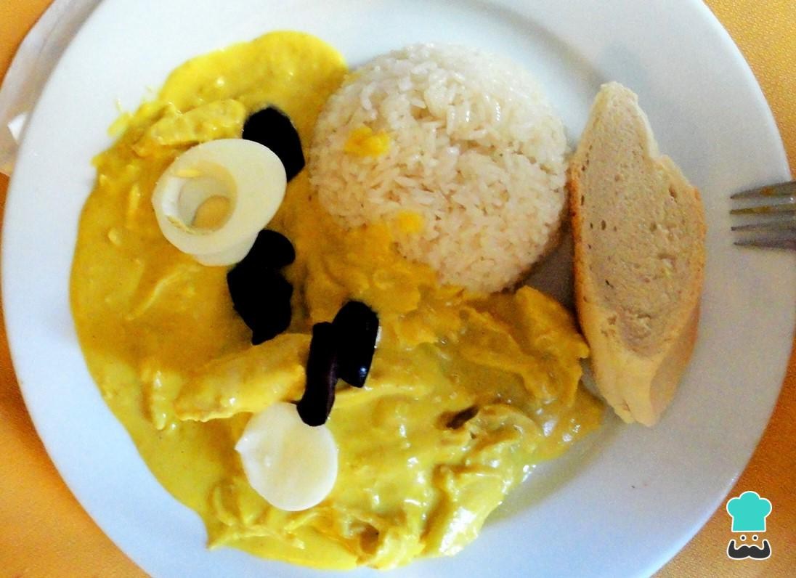
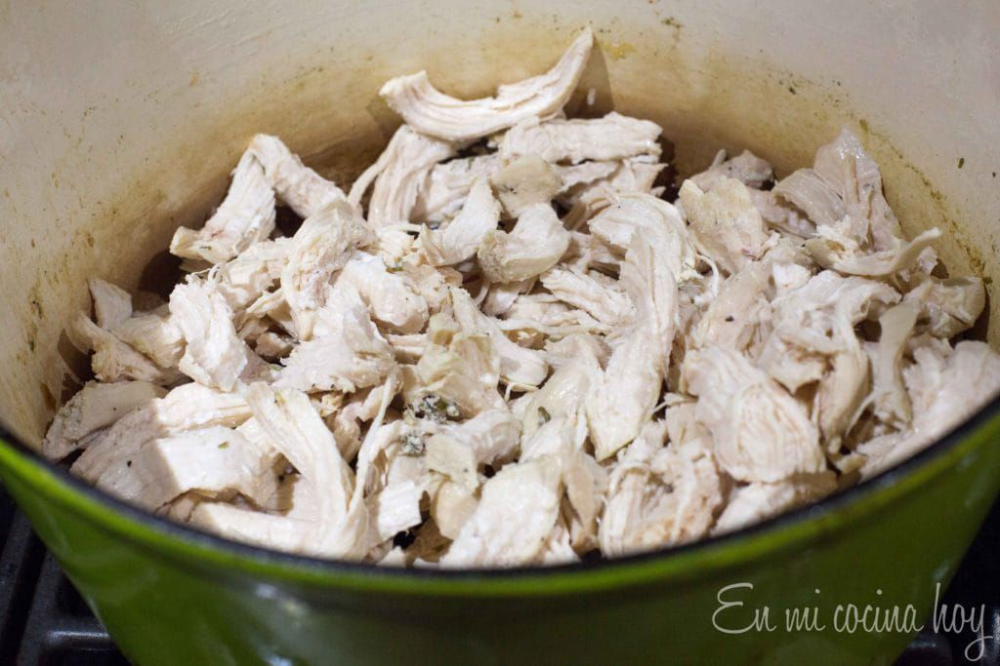
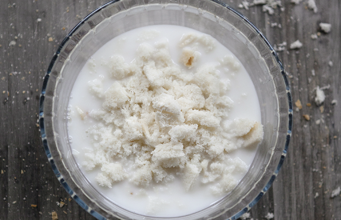
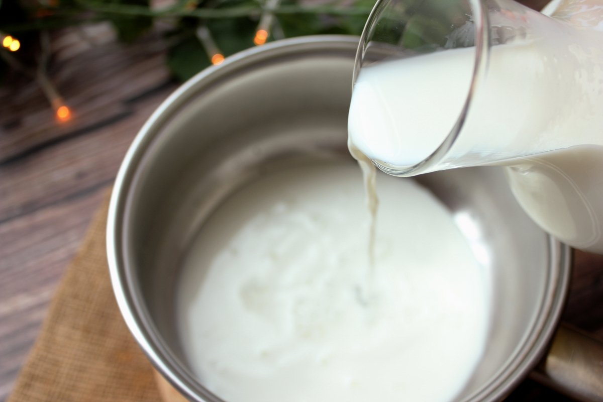
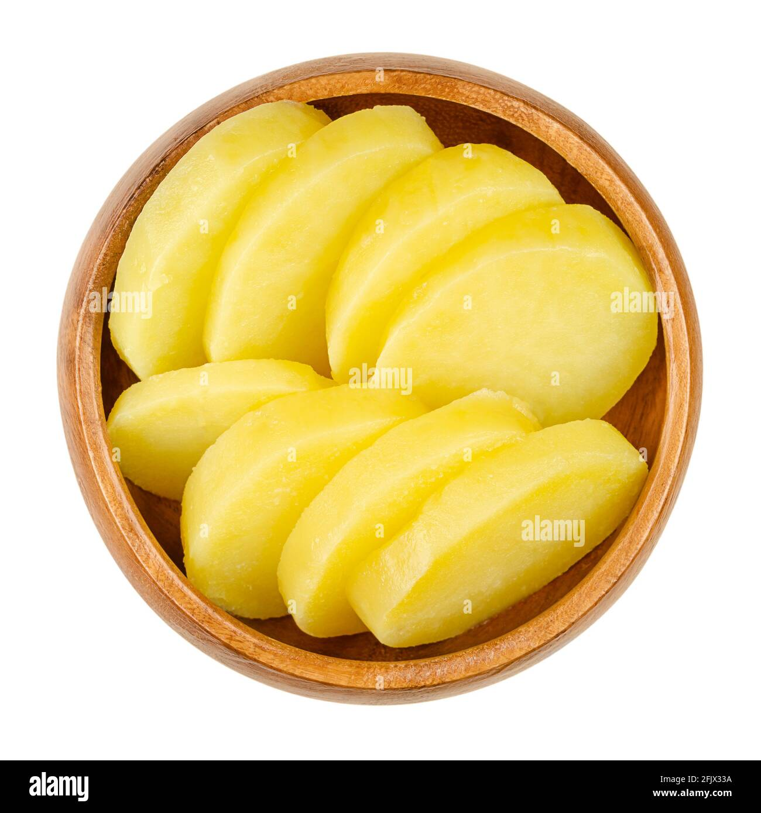
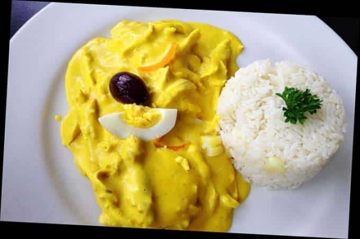

AJI DE GALLINA

Description
The word pachamanca is a typical Peruvian dish that dates back to the Inca culture, it comes from Quechua, pacha means earth and manka means pot, so this combined word becomes "earth pot."
Ingredients
- 1 chicken of approximately 2 kilos.
- 1/2 cup oil
- 1/4 kilo of chopped onion
- 1/2 tablespoon minced garlic
- 6 liquefied green chili peppers
- 1 can of evaporated milk
- 4 slices of breadcrumbs
- 1/4 kilo of walnuts
- 10 tablespoons grated Parmesan cheese
- cooked yellow potatoes
- salt
- pepper to taste
- olives
- hard-boiled egg slices
Steps
- Cook the chicken in salted water until tender. Cool and crumble.

- Fry the garlic, onion and liquefied chili in the oil. Add the bread soaked in chicken broth or milk and blend. Cook for 10 minutes.

- Add the milk, shredded chicken, cheese, ground walnuts, salt and pepper.

- Place the potatoes cut in two on a platter and cover with the previous preparation.

- Decorate with olives and hard-boiled egg slices.

visit our other recipes on our page